\begin{eqnarray*}
e \in \mathit{Expr} & ::= &
o | x | x:=e | \mathbf{function} \; x(y...) \; e | \mathbf{return} \; e | e(x=e...) | \\
&& \mathbf{class} \; x(y...) \; e | e.x | e.x := e | \mathbf{new} \; x \; (y=e...) | \\
&& \mathbf{import} \; x \; \mathbf{from} \; m \; \mathbf{as} \; y | \mathbf{iter} \; x | e;e \\
o \in \mathit{Obj} & ::= & (n, v) \\
v \in \mathit{Definition} & ::= & (x, \tau) \\
\tau \in \mathit{IdentType} & ::= & \mathbf{func} | \mathbf{var} | \mathbf{cls} | \mathbf{mod} \\
n \in \mathit{Namespace} & ::= & (v)* \\
x, y \in \mathit{Identifier} & ::= & \mathit{is \; the \; set \; of \; program \; identifiers} \\
m \in \mathit{Modules} & ::= & \mathit{is \; the \; set \; of \; modules} \\
E & ::= & [] | x := E | \mathbf{return} \; E | E(x=e...) | o(x=E...) | \\
&& \mathbf{new} \; x(y=E) | E.x | E.x := e | o.x := E | \mathbf{iter} \; o | E;e | o;E \\
\end{eqnarray*}
- \(\tau \in \mathit{IdentType} ::= \mathbf{func} | \mathbf{var} | \mathbf{cls} | \mathbf{mod}\)
- 識別子は4種類に分けられる
- \( v \in \mathit{Definition} ::= \; (x, \tau) \in \mathit{Identifier} \times \mathit{IdentType} \)
- 各識別子はこのペアで区別する
- \(o \in \mathit{Obj} ::= (n, v) \in \mathit{Namespace} \times \mathit{Definition}\)
- Objectは、NamespaceとDifinitionで定義
- 右図の例
var@1: [(main, mod)]var@3: [(main, mod), (A, cls)]- Evaluation Context
- sub-expressionが評価される順番を表す
- ex.)
E.x = evso.x = E E.x = e: 現在xのreceiverを評価中o.x = E: 現在右辺値を評価中(receiverはオブジェクトoだと評価済み)- Pythonプログラムを解析する上で評価順序が大切か？
- (式の評価順序は決まっている(cf. Is Python's order of evaluation of function arguments and operands deterministic (+ where is it documented)?))
-
無理矢理な例:
def id(a): return a def side_effect(): global id id = None return "OK" id(side_effect()) - 細かい話
- dictionaryやlistは、一般的なオブジェクトとして扱う
x["key"]->x.key- メリット: リストや辞書をオブジェクトと同様に扱うことができる
- デメリット: FP, FNにつながる (ex.
d.keys(); d["keys"] = None; d.keys();) - ただし本研究は
d.keys()のような、特別なbuilt-in型のmethod callを解析できないためこの方法が許容される(と思う...) - \(s \in \mathit{Scope} = \mathit{Definition} \hookrightarrow \cal{P}(\mathit{Definition})\)
- difinitionの視認(visible)関係を表す木構造
- node: Definition
- edge: 親子関係
closureや関数内関数を扱うことができるようになる- closureや関数内関数で使用される(外側で定義された)変数がどこで定義されたものか判別できるようになる
-
def func(): x = 3 def add3(y): return y+x return add3 z = func() z(5) # 8 - \(h \in \mathit{ClassHier} = \mathit{Obj} \hookrightarrow \mathit{Obj}*\)
- クラスの継承関係を表す
- 多重継承等も扱うことができるようになる
- \(\pi \in \mathit{AssignG} = \mathit{Obj} \hookrightarrow \cal{P}(\mathit{Obj})\)
- オブジェクト同士の代入関係を表すグラフ構造
- node: Object = (\(\mathit{Namespace, Identifier}\))
- edge: そのオブジェクトが持ち得る(指し得る)オブジェクト
- E-CTX
- COMPOUND
- IDENT
- ASSIGN
- \(\displaystyle \frac{ s'=\texttt{addScope}(s,n,x,\mathbf{var}) \quad o'=(n,(x,\mathbf{var})) \quad \pi'=\pi[o' \rightarrow \pi(o') \cup \{o\}] }{ \langle \pi, s, n, h, E[x:=o] \rangle \rightarrow \langle \pi', s', n, h, E[o'] \rangle } \)
- \( s'=\texttt{addScope}(s,n,x,\mathbf{var}) \) : scope treeに変数\(x\)(左辺値)のidentifierを追加
- \(o'=(n,(x,\mathbf{var}))\) : オブジェクト\(o'\)とはnamespace \(n\)で変数\(x\)が指すオブジェクト
- \( \pi'=\pi[o' \leftarrow \pi(o') \cup \{o\}] \) : \(o'\)が元々指していたオブジェクト(\(\pi(o')\))と\(o\)の両方を指す
- FUNC
- \(\displaystyle \frac{ s'=\texttt{addScope}(s,n,x,\mathbf{func}) \quad s''=\texttt{addScope}(s',n',\texttt{ret},\mathbf{var}) \quad s'''=\texttt{addScope}(s'',n',y,\mathbf{var}) }{ \langle \pi, s, n, h, E[\mathbf{function} \; x \; (y...) \; e] \rangle \rightarrow \langle \pi', s''', n', h, E[e] \rangle } \)
- \( s'=\texttt{addScope}(s,n,x,\mathbf{func}) \) : scope treeに現在のnamespaceで関数xを追加
- \( n'=n \cdot (x,\mathbf{func}) \) : 新規namespaceの作成
- \( s''=\texttt{addScope}(s',n',\texttt{ret},\mathbf{var}) \) : scope treeに関数内namespaceで仮想変数\(\texttt{ret}\)を追加
- \( s'''=\texttt{addScope}(s'',n',y,\mathbf{var}) \) : scope treeに関数内namespaceで仮引数\(y\)を追加
- CALL
- \(\displaystyle \frac{ o_1=(n',(f,\mathbf{func})) \quad o_2'=(n' \cdot f,(y,\mathbf{var})) \quad \pi'=\pi[o_2' \rightarrow \pi(o_2') \cup \{o_2\}] }{ \langle \pi, s, n, h, E[o_1(y=o_2...)] \rangle \rightarrow \langle \pi', s, n, h, (n' \cdot f,(\texttt{ret},\mathbf{var})) \rangle } \)
- \( \pi'=\pi[o_2' \rightarrow \pi(o_2') \cup \{o_2\} \) : 仮引数\(y\)に対応するオブジェクトを上書き
- RETURN
- \(\displaystyle \frac{ o'=(n \cdot x,(\texttt{ret},\mathbf{var})) \quad \pi'=\pi[o' \rightarrow \pi(o') \cup \{o\}] }{ \langle \pi, s, n \cdot x, h, E[\mathbf{return} \; o] \rangle \rightarrow \langle \pi', s, n, h, E[o']) \rangle } \)
- return valueに対応するオブジェクトを上書き
- CLASS
- \(\displaystyle \frac{ s'=\texttt{addScope}(s,n,x,\mathbf{cls}) \quad t= \langle \texttt{getObject}(s,n,b) | b \in (y...) \rangle \quad h' = h[(n,(x,\mathbf{cls})) \rightarrow t] \quad n'=n \cdot (x,\mathbf{cls}) }{ \langle \pi, s, n, h, E[\mathbf{class} \; x \; (y...) \; e] \rangle \rightarrow \langle \pi, s', n', h', E[e] \rangle } \)
- \( t= \langle \texttt{getObject}(s,n,b) | b \in (y...) \rangle \) : 親クラスの識別子\(b\)に対応するobjectを全て取得
- \( h' = h[(n,(x,\mathbf{cls})) \rightarrow t] \) : class hierarchyを更新
- ATTR
- NEW
- ATTR_ASSIGN
- IMPORT
- ITER-ITERABLE
- ITER-GENERATOR
- input
- \(p \in \mathit{Program}\)
- \(\sigma \in \mathit{State} \quad\) (assignment graphの最終形)
- output
- \(\mathit{cg} \in \mathit{CallGraph}\)
- 条件分岐とloopは無視
- 実験によって、速い速度で、あまり精度を落とさないことが示されている
- dick typingへの対応
- namespaceによってattribute accessを判別することで、精度の向上を行う
- そのほかのPythonの特徴への対応
evalは無視- built-in型やbuilt-in関数等の情報は使っていない
- 例えば、
list.append()を解決できない - ソースコードが手に入るmoduleしか解析できない
- 提案手法はPythonプログラムに対してのcall graph構築に有用か
- 提案手法は既存手法と比較してどうか
- 提案手法の速度はどうか
- 2種類のベンチマークを使用
- Micro-benchmark Suite
- 言語の特徴を広くとらえた合成検体
- 計112個
- 1つの実行パスしか持たない
- 条件分岐やloopがない
- Macro-benchmark Suite
- リアル検体
- Githubのstar順にPython repositoryを並べ、3,500行以下のコードを選択
- 行数を制限したのは、正解セットを手作業で作る際のヒューマンエラーを少なくしたかったため
- Micro-benchmarkの正当性の証明
- 2人のベテランPython developerに以下の質問を10段階で評価してもらい、Micro-benchmarkの品質を評価
- Completeness: Pythonの特徴を全てとらえているか
- Code Quality: testはuniqueで最小か
- Description Quality: 表のdescriptionはテストの特徴を適切に表現しているか
- 結果
- 1人目: 全てに9.7の評価
- 2人目: Completenessには6, Description Qualityには10の評価
- 「built-in関数やgeneratorに関するテストが抜けている」
- FPの原因: Pythonの特徴を全て捉えていないため(ex. starred assignments)
- (Pyanの-はクラッシュ)
- PyCGが100%までいかないのは先に述べたLimitationが原因
- Pyanは
__init__を捕捉できない等があるため、precision, recall共に低い - Dependsはconservativeに解析を行うため、Precisionは高いが、Recallは低い
- UNIX timeコマンドを使用して時間を計測
- UNIX pmapコマンドを使用してメモリ消費量を計測
- 20回の実行の平均値
- 時間消費量
- PyanはASTを2回しか走査しない
- PyCGはfix point iterationを使用しているため遅い
- Dependsはsourceファイルのparseに多くの時間がかかる
- メモリ消費量
- PyanやDependsは内部のデータ構造の情報がより少ないため、消費量が少ない
- assignment graphを使用したCG解析手法の提案
- precision/recall共に既存手法より高い精度を記録
- Micro-benchmarkは将来の他の手法にとっても有用
- 攻めどころ: PyCGはflow-insensitive & context-insensitive
- 速度はPyCGを基準に、どれだけ近づけられるか
- benchmarkは評価に採用
- ただしsingle pathなので、拡充する必要がある
var = 10
class A:
var = 10
2. assinment graph解析(構築)のstateの定義
\begin{eqnarray*}
s \in \mathit{Scope} & = & \mathit{Definition} \hookrightarrow \cal{P}(\mathit{Definition}) \\
h \in \mathit{ClassHier} & = & \mathit{Obj} \hookrightarrow \mathit{Obj}* \\
\pi \in \mathit{AssignG} & = & \mathit{Obj} \hookrightarrow \cal{P}(\mathit{Obj}) \\
\sigma \in \mathit{State} & = & \mathit{AssignG} \times \mathit{Scope} \times \mathit{Namespace} \times \mathit{ClassHier} \\
\end{eqnarray*}
Scope
module name: crypto
import cryptops
class Crypto:
def __init__(self, key):
self.key = key
def apply(self, msg, func):
return func(self.key, msg)
crp = Crypto("secretkey")
encrypted = crp.apply(
"hello world", cryptops.encrypt)
decrypted = crp.apply(
encrypted, cryptops.decrypt)

Class Hierarchy
Assignment Graph
module name: crypto
import cryptops
class Crypto:
def __init__(self, key):
self.key = key
def apply(self, msg, func):
return func(self.key, msg)
crp = Crypto("secretkey")
encrypted = crp.apply(
"hello world", cryptops.encrypt)
decrypted = crp.apply(
encrypted, cryptops.decrypt)
Q. (crypto.Crypto.apply, msg)に代入されるオブジェクトは？
Q. (crypto, decrypted), (crypto, decrypted)に代入されるオブジェクトは？

Q. (crypto.Crypto.apply, < virt-ret >)に代入されるオブジェクトは？
3. assinment graph解析のルールの定義
2. で定義したstateを、各expressionのsemanticsに基づいて変化させる
ルールは以下の形を取る
\begin{eqnarray*}
\langle \pi, s, n, h, E[e] \rangle \rightarrow \langle \pi', s', n', h', E[e'] \rangle
\end{eqnarray*}
Q. これは「〇〇〇〇 update」
Weak updateassignment graphを使ってcall graphを作成
Call graphは以下の形で定義 \begin{eqnarray*} \mathit{cg} \in \mathit{CallGraph} = \mathit{Obj} \hookrightarrow \cal{P}(\mathit{Obj}) \end{eqnarray*}
CG構築アルゴリズム
\begin{eqnarray*}
&& \mathbf{foreach} \; e \; \mathbf{in} \; \mathit{Program} \; \mathbf{do} \\
&& \qquad \mathbf{while} \; e \notin \mathit{Obj} \; \mathbf{do} \\
&& \qquad\qquad \langle \sigma,E[e] \rangle \rightarrow \langle \sigma', E[e'] \rangle
\quad \mathit{\color{blue}{// Ex.) \; Change \; The \; Namespace}} \\
&& \qquad\qquad \mathbf{if} \; e' == o_1(y = o_2...) \; \mathbf{then}
\quad \mathit{\color{blue}{// Call \; Expression}} \\
&& \qquad\qquad\qquad (\pi,s,n\cdot f,h) \leftarrow \sigma' \\
&& \qquad\qquad\qquad c \leftarrow \texttt{getReachableFuns}(\pi, o_1)\
\quad \mathit{\color{blue}{// Get \; Callee}} \\
&& \qquad\qquad\qquad o_3 \leftarrow \texttt{getObject}(s,n,f) \\
&& \qquad\qquad\qquad \mathit{cg} \leftarrow \mathit{cg}[o_3 \rightarrow \mathit{cg}(o_3) \cup c]
\quad \mathit{\color{blue}{// Add \; Call \; Edges}} \\
&& \qquad\qquad \mathbf{end} \\
&& \qquad\qquad e \leftarrow e' \\
&& \qquad \mathbf{end} \\
&& \mathbf{end} \\
&& \mathbf{return} \; \texttt{cg} \\
\end{eqnarray*}
Discussion & Limitations
実験・評価
Research question
ベンチマークについて
Micro-benchmarkの結果
Macro-benchmarkの結果
Time and Memory Performance
Case study
Githubは脆弱性のあるライブラリへの依存関係があると警告をしてくれる
ただしこの警告は、脆弱性のある関数を呼び出したかどうかまでは分からない
そこでPyCGを使うことで、CGを構築し、実際に呼び出しているものを特定することができる
関連研究
| 名前 | 静的or動的 | 対象言語 | 手法 | 精度 | sensitivity | 速度 |
|---|---|---|---|---|---|---|
| T.Xie, D.Notkin[CSE '11] | 動的 | Java | - | 高 | - | 遅 |
| S.Fin, J.Dolby(WALA)['12] | 静的 | Java/JS | pointer解析 | 低 | flow & context | 速 |
| A.Feldthaus(ACG)[ICSE '13] | 静的 | JS | flow | 中 | flow & context | 速 |
| S.H.Jensen(TAJS)[ISAS '13] | 静的 | JS | type | 中 | flow & context | 速 |
| Github hser gak(pycallgraph)['14] | 動的 | Python | - | 中 | - | 遅 |
| D.Fraser(Pyan)['14] | 静的 | Python | - | 低 | - | 速 |
| V.Salis(PyCG)[ICSE '20] | 静的 | Python | value-flow | 中* | - | 速 |
| 提案手法 | 静的 | Python | type | 高 | flow & context & path | ？ |